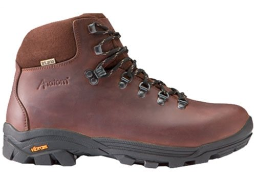

Anatom® Q2

Fitting is Comfort narrow last unless stated as Comfort Plus Fit - "Standard Fit"
LIGHTWEIGHT FULL GRAIN LEATHER WALKING BOOT FOR HILLS AND VALLEYS
- Upper - DBL™ 2.5mm full grain waterproofed leather
- Membrane - tri.aria™ waterproof, breathable membrane
- Lining - Hydrophobic Interface One™
- Insole - High loft Lambswool
- Midsole - CalibratedMidsole System
- Outsole - Vibram® Grivola
- Weight - 1550 gms (size 42)
The Anatom® Q2 brings together the comfort of a lightweight boot with the durability of our full grain Italian leather. The Q2 is as comfortable on the fells as it is hiking in the hills delivering great support and stability to the user. Because we’ve gone to such great lengths in sourcing lightweight components that compliment the quality of our leather you’ll enjoy the true comfort of the Q2 for many years.
- Features & Benefits
- 100% waterproof and breathable Tri.Aria™ liner is engineered to keep your feet dry and comfortable - even in extreme conditions
- A full-grain, all-leather upper provides outstanding waterproof protection while the soft calf leather padded collar offers ankle comfort
- Calibrated midsole system provides excellent torsional stability whilst ensuring a comfortable, natural flex for the foot
- Vibram® Grivola outsole provides natural movement, stability, grip and thrust for the foot
- Three-part brass speed lace and hook combination system for a secure, true fit and quick entry and removal of the boot
- Natural Lambswool footbeds are deeply padded for all day comfort and are naturally anti-microbial
- Product lifetime guarantee
- Fit Notes
- Narrow, snug heel
- Wider forefoot
- Generous toe box height
- Natural rocker
$108.00